7. 解决ClaudeAI的三个问题
7.1. 引言
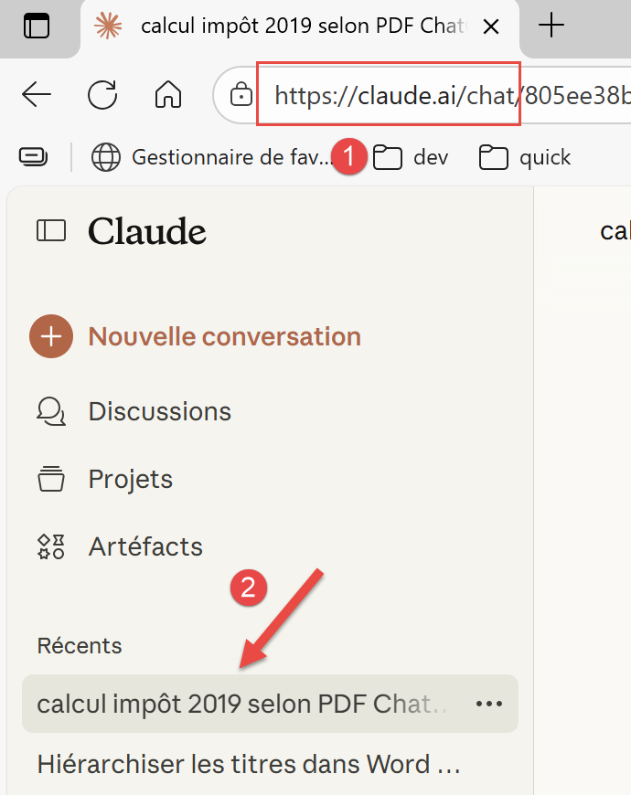 | 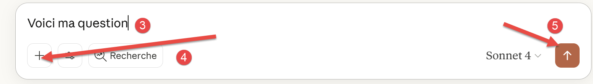 |
- 在[1]中，由Anthropic公司[https://www.anthropic.com/]开发的ClaudeAI[https://claude.ai/chat]的URL；
- 在[2]中，是您的聊天记录。ClaudeAI的免费使用时长非常有限。我购买了一个月的付费订阅来进行以下测试；
- 在[3]中，输入您的问题；
- 在 [4] 中，可向您的问题附加文件；
- 在 [5] 中，提交您的问题；
7.2. 问题 1
问题：
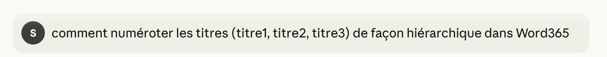 |
ClaudeAI 回答正确。
7.3. 问题 2
问题：
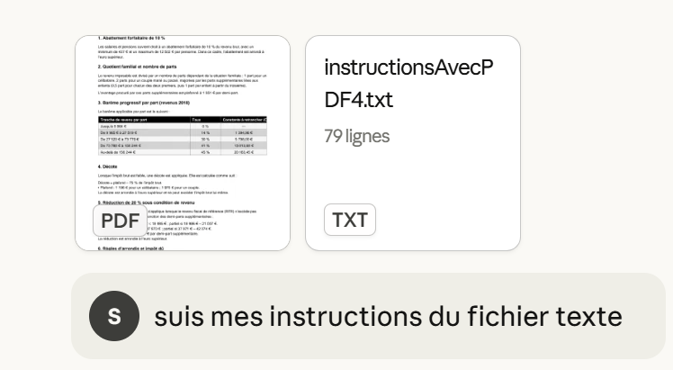 |
我已将两个文件作为附件上传至我的提问中：
- 由ChatGPT生成的PDF文件 [The problem according to ChatGPT.pdf]；
- 我的指令在文本文件中 [InstructionsAvecPDF4.txt]。该文件详细说明了ChatGPT建议的25个单元测试；
第一个响应是错误的。以下是执行日志：
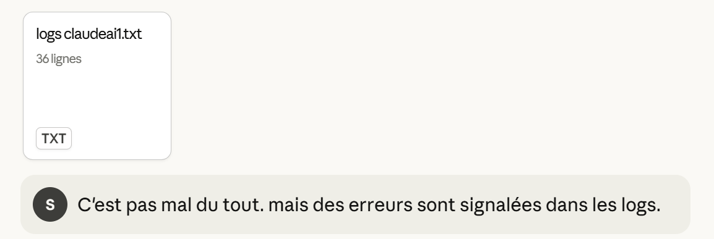 | 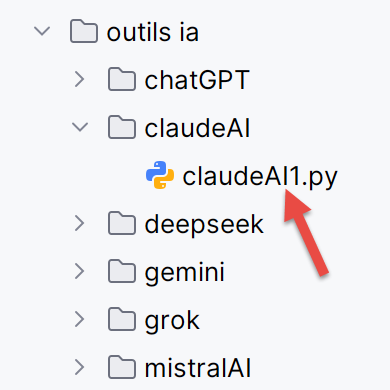 |
该响应仍包含一个错误，尽管只是个小问题。ClaudeAI在测试中因2欧元之差而失败，尽管测试要求的精度仅为1欧元。事实上，早些时候，Gemini和ChatGPT也因同样的原因未能通过此项测试。这很可能是因为1欧元的精度限制过于严格，而我们尚不清楚官方针对舍入问题的具体规则。
无论如何，经过两轮往返沟通后，ClaudeAI 给出了正确的解决方案。
7.4. 问题 3
问题：
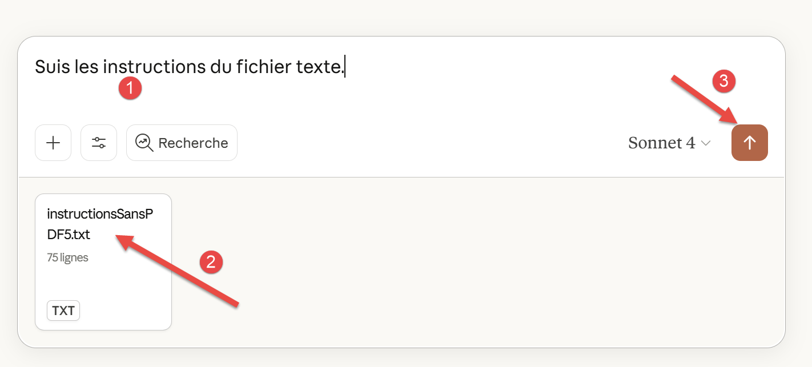 |
在[2]中，我们附上了一个此前用于早期AI的文本文件。该文件迫使AI在线搜索信息，并且再次要求完成25个单元测试。
首次响应中存在诸多错误。我们将日志发送给AI：
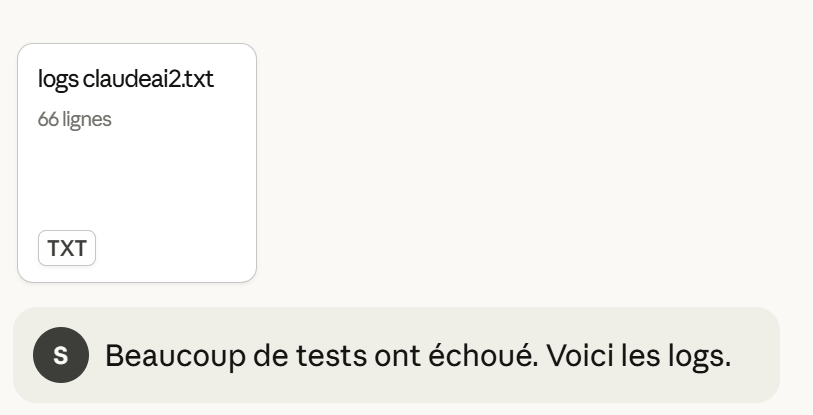 |
仍然有错误：
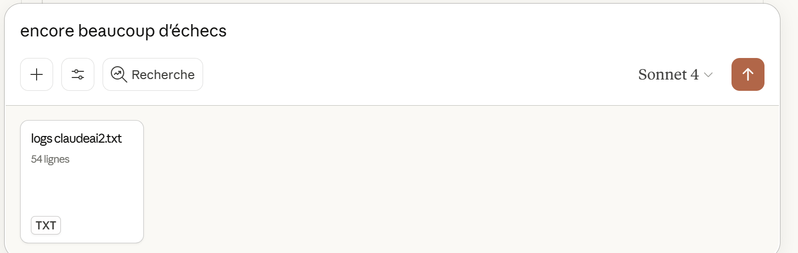 |
仍然无法正常工作。我们鼓励这样做：
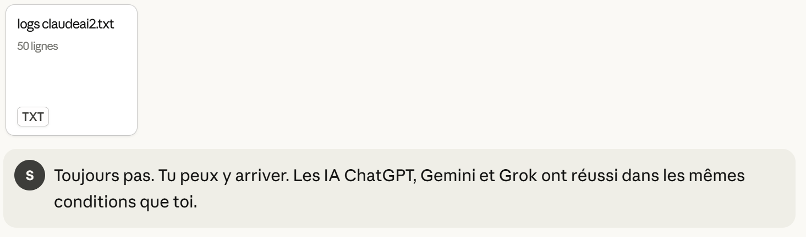 |
仍然无法正常工作：
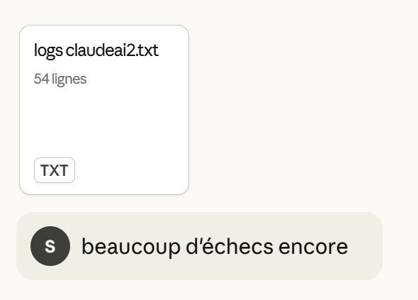 |
还是没有反应：
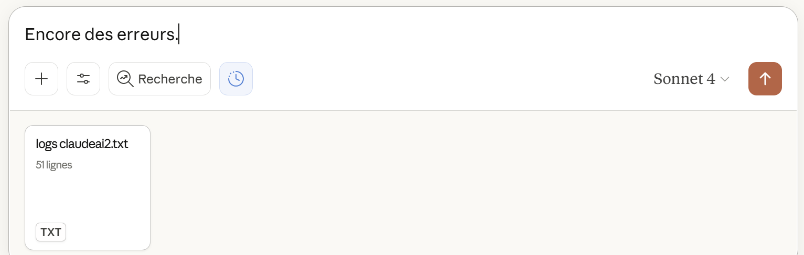 |
没戏：
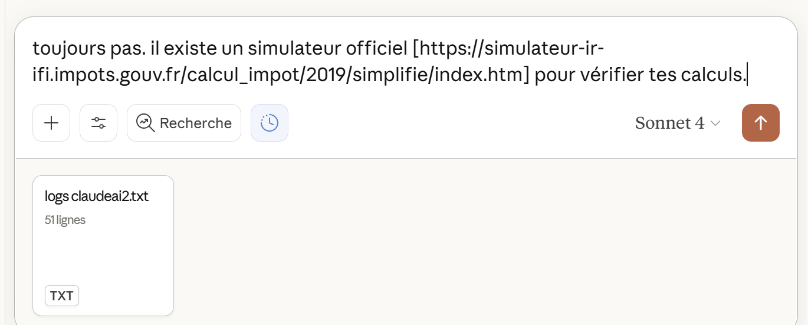 |
仍然失败很多次。我们将认为ClaudeAI未能在合理的时间内解决第3个问题。